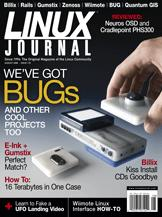

Shutdown Archive web server
Search:
Linux Journal
Issue #172/August 2008

Features
The BUG: a Linux-Based Hardware Mashup
by Mike Diehl
With the BUG, you get a GPS, camera, motion detector and accelerometer all in one hand-sized unit, and it's completely programmable.
Billix: a Sysadmin's Swiss Army Knife
by Bill Childers
Build a toolbox in your pocket by installing Billix on that spare USB key.
Fun with E-Ink, X and Gumstix
by Jaya Kumar
Find out how to make standard X11 apps run on an E-Ink display using a Gumstix embedded device.
One Box. Sixteen Trillion Bytes.
by Eric Pearce
Build your own 16 Terabyte file server with hardware RAID.
Indepth
Linux for the Long Haul
by Michael Surran
Checking in with the Greater Houlton Christian Academy's switch to Linux.
Zenoss and the Art of Enterprise Monitoring
by Jeramiah Bowling
Stay on top of your network with an enterprise-class monitoring tool.
How to Fake a UFO Landing
by Dan Sawyer
Use Voodoo to solve video match-moving problems.
Quantum GIS: the Open-Source Geographic Information System
by James Gray
Hooked on Google Earth? Check out Quantum GIS to satisfy your geographic cravings.
Build a MythTV Box without Breaking the Bank
by P. Surdas Mohit
A quick-and-easy guide to the world of MythTV.
Columns
Shawn Power's Current_Issue.tar.gz
Linux: the Root of All Coolness
Reuven M. Lerner's At the Forge
Profiling Rails Applications
Marcel Gagné's Cooking with Linux
Cool as Ice!
Dave Taylor's Work the Shell
Movie Trivia and Fun with Random Numbers
Kyle Rankin's Hack and /
Wiimote Control
Doc Searls' EOF
Mixing Up a Generative Mobile Feast
Reviews
Hot and Bothered at Starbucks
by Dan Sawyer
The Neuros OSD Connects Your TV to the Internet
by Marco Fioretti
In Every Issue
Letters
upFRONT
New Products
New Projects
Archive Index
Shutdown Archive web server
Search:
Copyright © 1994 - 2018
Linux Journal
. All rights reserved.